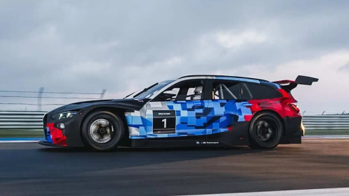
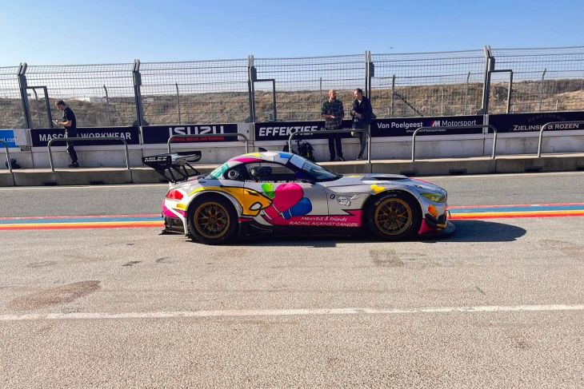

A BMW VAI participar ans 24h Nurburgring com o M3 Touring GT3 , o que começou com uma brincadeira virou realidade, com estreia e desenvolvimento do carro na NLS2 no proximo final de semana, participara na categoria SP-X.

Uma 2a BMW Z4 GT3 vai participar nas 24h Nurburgring com a equipe Koopman, na categoria SP9, como preparação participar na NLS3 no dia 11 de abril